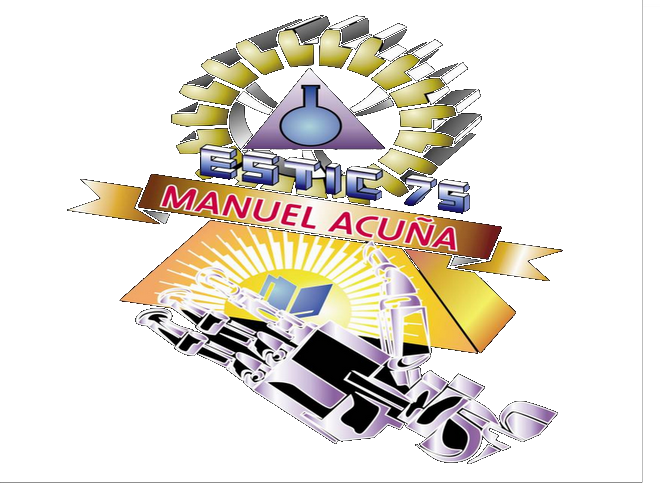

Periodo: 2010-2013
Egrese con titulo de auxiliar de tecnico electricista
Direccion: Colonia jardines De Morelos, Ecatepec de Morelos, Ecatepec de Morelos, Estado de México, C.P. 55070
Periodo: 2014-2017
Durante mi estancia en esta institucion logre acreditar todos mis cursos en un plazo de tres años
Direccion: Av. Ing. Eduardo Molina No. 1577, Delegación Gustavo A. Madero, Ciudad de México. Teléfono 57 37 37 00
Pagina oficial: http://enp3.unam.mx/
Periodo: 2015-2017
Paralelamente a mis estudio en la ENP estudie la carrera tecnica en computacion concluyendo dichos estudios a la par que mi estudios preparatorianos
Direccion: Adolfo Prieto 722, Col. Del Valle Del. Benito Juárez Edificio Anexo PB
Pagina oficial: http://www.ete.enp.unam.mx/
Periodo: 2017-actualidad
Actualmente estudio la carrera de Ingenieria en computacion en la prestigiosa facultad de ingenieria con el mayor esfuerzo y dedicacion
Direccion: Escolar 04360, Ciudad Universitaria, Ciudad de México, CDMX
Pagina oficial: http://www.ingenieria.unam.mx/
Periodo: 2018-actualidad
En este semestre entre a este programa con los animos de aprender y explorar mis horizontes sobre el apli campo de la computacion y, de ser posible, el ser becario
Direccion: Edificio Q "Luis G. Valdés Vallejo", 2do piso PROTECO, Anexo de Ingeniería, Ciudad Universitaria, Ciudad de México.
Pagina oficial: http://proteco.mx/cursos